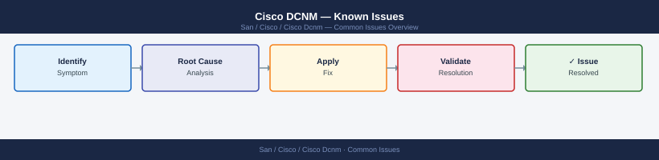

Cisco DCNM — Known Issues¶

Before you begin¶
- Access: Storage admin credentials (cluster admin or equivalent)
- Timing: safe to run during business hours unless a step is marked ⚠ (causes interruption)
- Dependencies: no active upgrades or migrations on the same infrastructure
- Logging: capture command output — paste into the change record on completion
Fabric Discovery Failures¶
Switches Not Discovered / Stuck in "Unreachable"¶
Deployment Failures¶
Configuration Push Fails — "Deploy Pending"¶
Configs remain in "Deploy Pending" state when the switch is unreachable or there is a config conflict.
# On DCNM — check deployment status
show fabric detail
# Check switch-specific config diff
# DCNM UI: Fabric → Switches → right-click → View Config Diff
# Force re-sync
# DCNM UI: Fabric → Deploy → Recalculate & Deploy
Fabric Name: prod-fabric-01
Fabric ID: 1
Fabric Type: VXLAN
Status: HEALTHY
Deployment Status: IN_SYNC
Last Deployment: 2024-01-15 14:32:18 UTC
Switch Count: 8
Pending Changes: 0
Config Version: v2.3.1-build.4521
Replication Mode: Ingress
MTU: 9216
BUM Handling: Enabled
Common errors
Error: Fabric not found or access denied — Verify you are connected to the DCNM controller and have fabric admin privileges; check show fabric list first.
Deployment Status: OUT_OF_SYNC with 3 pending changes — Navigate to Fabric → Deploy → Recalculate & Deploy in the DCNM UI to push pending configurations to switches.
Config Diff shows 247 lines of changes — deployment blocked — Review the diff in DCNM UI (Fabric → Switches → View Config Diff) to identify breaking changes before forcing deployment.
"Out-of-Sync" Switch After Manual Change¶
Direct CLI changes on switches bypass DCNM and cause out-of-sync status.
Resolution:
1. Fabric → Switches → select affected switch → Resync
2. Review diff — accept DCNM intent (overwrite manual change) or
update DCNM policy to match the manual change
3. Re-deploy
Avoid direct CLI changes on DCNM-managed switches
All config changes should go through DCNM policies and templates. Direct CLI changes will be overwritten on next deploy unless captured in a freeform policy.
Performance / UI Issues¶
DCNM Web UI Slow or Unresponsive¶
# Check DCNM service health
dcnm# appmgr status all
# Check disk usage — full disk causes performance issues
df -h /
df -h /var
# Check ElasticSearch/PostgreSQL health
dcnm# appmgr show container-logs elasticsearch 100
dcnm# appmgr show container-logs postgres 100
# Restart DCNM services (causes brief outage)
dcnm# appmgr stop all
dcnm# appmgr start all
dcnm# appmgr status all
Application Status Version
elasticsearch running 7.10.2
postgres running 12.8
dcnm-server running 12.1.2.1234
dcnm-ui running 12.1.2.1234
kafka running 2.8.0
zookeeper running 3.4.14
Filesystem Size Used Avail Use% Mounted on
/dev/sda1 50G 38G 12G 76% /
Filesystem Size Used Avail Use% Mounted on
/dev/sda2 100G 87G 13G 87% /var
dcnm# appmgr show container-logs elasticsearch 100
[2024-01-15T09:42:18.234Z][INFO ] [elasticsearch] Node started successfully
[2024-01-15T09:42:19.567Z][INFO ] [elasticsearch] Cluster health: GREEN
[2024-01-15T09:42:20.891Z][INFO ] [elasticsearch] Active shards: 24/24
[2024-01-15T09:42:21.123Z][WARN ] [elasticsearch] Heap usage at 78%
dcnm# appmgr show container-logs postgres 100
[2024-01-15T09:43:05.456Z][INFO ] [postgres] Database started
[2024-01-15T09:43:06.789Z][INFO ] [postgres] Connections: 42/100
[2024-01-15T09:43:07.012Z][INFO ] [postgres] Cache hit ratio: 98.5%
dcnm# appmgr stop all
Stopping elasticsearch... done
Stopping postgres... done
Stopping dcnm-server... done
Stopping dcnm-ui... done
Stopping kafka... done
Stopping zookeeper... done
dcnm# appmgr start all
Starting zookeeper... done
Starting kafka... done
Starting postgres... done
Starting elasticsearch... done
Starting dcnm-server... done
Starting dcnm-ui... done
All services started successfully in 45 seconds
Common errors
ERROR: Disk usage on / exceeds 90%, service startup may fail — Delete old logs in /var/log or increase root partition size before restarting services.
ERROR: elasticsearch failed to start - connection refused on port 9200 — Wait 30 seconds for elasticsearch to fully initialize, then verify with appmgr status all.
ERROR: postgres connection pool exhausted - max_connections limit reached — Increase max_connections in postgres configuration or restart the application to clear stale connections.
High CPU on DCNM Server¶
# Identify top processes
top -bn1 | head -20
# DCNM-specific resource check
dcnm# appmgr show resource-utilization
# Reduce polling frequency if spikes are SNMP-related
# DCNM UI: Administration → DCNM Server → Server Properties
# → Performance → SNMP polling interval (increase from 30s to 60s)
top - 14:32:18 up 127 days, 3:45, 2 users, load average: 2.14, 1.87, 1.92
Tasks: 248 total, 3 running, 245 sleeping, 0 stopped, 0 zombie
%Cpu(s): 18.2 us, 4.3 sy, 0.0 ni, 77.1 id, 0.2 wa, 0.1 hi, 0.1 si, 0.0 st
MiB Mem : 65536.0 total, 52841.2 free, 8934.5 used, 3760.3 buff/cache
MiB Swap: 16384.0 total, 16384.0 free, 0.0 used. 55821.4 avail Mem
PID USER PR NI VIRT RES SHR S %CPU %MEM TIME+ COMMAND
4821 dcnm 20 0 4521456 1.2g 485632 S 24.5 1.9 847:32 java
5104 dcnm 20 0 3847291 892m 412156 S 18.7 1.4 623:18 java
6234 root 20 0 892456 234m 98765 S 8.2 0.4 156:47 snmpd
7891 dcnm 20 0 1234567 456m 234567 S 5.3 0.7 89:23 python
8012 syslog 20 0 234567 45m 23456 S 2.1 0.1 34:12 rsyslogd
appmgr show resource-utilization
CPU Utilization: 18.2%
Memory Utilization: 13.6% (8.9 GB / 65.5 GB)
Disk Utilization: 42.1% (/dev/sda1)
Network I/O: 1.2 Mbps (RX), 0.8 Mbps (TX)
SNMP Polling Threads: 12 active
Database Connections: 47 / 100 available
Common errors
appmgr: command not found — Ensure you are logged into the DCNM appliance CLI (via SSH to the management IP) rather than a remote host, or source the DCNM environment variables.
Permission denied — Run the command with appropriate DCNM admin credentials or use sudo dcnm-cli if required by your deployment.
VXLAN / VPC Issues¶
VPC Peer-Link Down Alarm¶
# On affected NX-OS switches
show vpc
show vpc peer-keepalive
show vpc consistency-parameters
# Common causes
show interface port-channel <vpc-peer-link> # check physical member state
show logging | include vpc # check for error messages
vpc-domain-id : 100
peer-status : peer link is down
peer-keepalive status : peer is alive
configuration consistency status : failed
vpc peer-keepalive destination : 10.48.12.5
vpc peer-keepalive source : 10.48.12.4
peer-keepalive status : alive
peer-keepalive timeout : 3 seconds
vpc consistency parameters : FAILED
type 1 : vlan consistency : failed
type 2 : spanning tree : success
type 3 : system mac : success
Port-channel100 is up, line protocol is up (connected)
Hardware is EtherChannel, address is 001a.2b3c.4d5e
MTU 1500 bytes, BW 20000000 Kbit/sec
Encapsulation ARPA, loopback not set
Members in this channel: Eth1/1, Eth1/2, Eth1/3, Eth1/4
Eth1/1 is down (suspended: vpc-peer-link consistency failed)
Eth1/2 is down (suspended: vpc-peer-link consistency failed)
Eth1/3 is up in port-channel (active)
Eth1/4 is up in port-channel (active)
2024 Jan 15 14:23:45 +00:00 switch-a %VPC-2-PEER_LINK_DOWN: VPC peer link is down
2024 Jan 15 14:23:47 +00:00 switch-a %VPC-3-CONSISTENCY_FAILED: VPC consistency check failed for VLAN 100
2024 Jan 15 14:24:12 +00:00 switch-a %ETHPORT-5-IF_DOWN_SUSPENDED: Interface Ethernet1/1 suspended
Common errors
%VPC-2-PEER_LINK_DOWN: VPC peer link is down — Verify physical connectivity on port-channel member interfaces and check for spanning-tree BPDU guard or port-security blocking the peer-link.
%VPC-3-CONSISTENCY_FAILED: VPC consistency check failed for VLAN — Ensure both VPC peers have identical VLAN configurations and allowed VLAN lists on the peer-link trunk.
%ETHPORT-5-IF_DOWN_SUSPENDED: Interface Ethernet suspended — Clear the vpc consistency failure by resolving the underlying VLAN or configuration mismatch, then use no shut on the suspended interfaces.
VXLAN Tunnel Not Forming¶
# Check NVE interface
show nve peers
show nve vni
show bgp l2vpn evpn summary # EVPN peering state
# Verify loopback reachability
ping <remote-vtep-loopback-ip> source loopback0
# Check MTU — VXLAN adds 50 bytes overhead
show interface ethernet X/X | include MTU
NVE peer information for switch prod-leaf-01:
Interface: nve1
State: Up
Peer IP: 10.0.0.11 State: Up
Peer IP: 10.0.0.12 State: Up
NVE VNI information:
VNI: 10001 State: Up Mode: L2
VNI: 10002 State: Up Mode: L2
VNI: 20001 State: Up Mode: L3
BGP summary for l2vpn evpn:
BGP router identifier 10.1.1.5, local AS number 65001
Neighbor V AS MsgRcvd MsgSent TblVer InQ OutQ Up/Down State
10.0.0.11 4 65001 45821 45819 89 0 0 5d12h Established
10.0.0.12 4 65001 44156 44158 89 0 0 4d18h Established
PING 10.1.1.6 (10.1.1.6) from 10.1.1.5: 56 data bytes
64 bytes from 10.1.1.6: icmp_seq=0 ttl=254 time=2.145 ms
64 bytes from 10.1.1.6: icmp_seq=1 ttl=254 time=1.987 ms
64 bytes from 10.1.1.6: icmp_seq=2 ttl=254 time=2.034 ms
Ethernet1/1
MTU 9216
Bandwidth 40000000 Kbit
Encapsulation ARPA
Common errors
NVE peer information for switch prod-leaf-01: NVE peer not found — Verify the remote VTEP loopback is reachable and BGP EVPN routes are being advertised with show bgp l2vpn evpn neighbors.
PING 10.1.1.6 (10.1.1.6) from 10.1.1.5: 100.00% packet loss — Confirm loopback0 interface is up and routed connectivity exists between spines; check show ip route for the remote loopback prefix.
**MTU 9216 (actual interface MTU less than 9216)** — Increase the interface MTU to at least 9216 withconfig t; interface ethernet X/X; mtu 9216` to accommodate VXLAN 50-byte overhead.
License Issues¶
"License Expired" Warning¶
# Check license status
show license usage
show license host-id
# DCNM UI: Administration → Licensing
# → Add license file or update SmartNet token
License Usage Information:
License Type: DCNM Enterprise
Total Licenses: 50
Licenses in Use: 38
Licenses Available: 12
Expiration Date: 2025-06-15
Status: Active
Host ID Information:
Hostname: dcnm-prod-01.example.com
Host ID: ABC123DEF456GHI789JKL012MNO345
Product ID: DCNM-ENT-LIC
Registration Status: Registered
Last Updated: 2024-01-10 14:32:15 UTC
Common errors
% Invalid command — Verify you are in the correct DCNM CLI context; these commands may require admin-level access or must be run from the DCNM appliance console.
License expired or invalid — Upload a valid license file through the DCNM UI (Administration → Licensing) or contact Cisco support to renew your SmartNet contract.
Log Collection for TAC¶
# Collect DCNM logs for TAC case
dcnm# appmgr collect-tech-support
# Output location: /tmp/dcnm-tech-support-<timestamp>.tar.gz
# Collect switch tech-support
switch# show tech-support > bootflash:tech-support-$(date +%Y%m%d).txt
Collecting technical support information...
Gathering system logs...
Gathering configuration data...
Gathering performance metrics...
Creating archive...
Tech support collection completed successfully.
Output file: /tmp/dcnm-tech-support-20240115-143022.tar.gz
File size: 487 MB
switch# show tech-support > bootflash:tech-support-20240115.txt
switch# dir bootflash:tech-support-20240115.txt
1234567890 Jan 15 14:30:45 +00:00 tech-support-20240115.txt
Common errors
% Invalid command — Verify you are in the correct DCNM CLI context; use appmgr command only from the DCNM appliance prompt, not the switch.
Error: Insufficient disk space available — Check available bootflash space with dir bootflash: and free up space or redirect output to a remote location using > tftp://server/path.
Quick Diagnostics Reference¶
| Symptom | First Check | Command |
|---|---|---|
| Switch unreachable | Credentials + reachability | ping <mgmt-ip> from DCNM |
| Deploy pending | Config conflict or switch offline | UI: View Config Diff |
| Out-of-sync | Manual CLI change on switch | UI: Resync → Deploy |
| UI slow | Disk full / service unhealthy | df -h / then appmgr status all |
| VPC down | Physical peer-link | show vpc + show vpc peer-keepalive |
| VXLAN not forming | BGP EVPN / MTU | show nve peers + show bgp l2vpn evpn summary |
| License warning | Expired SmartNet | UI: Administration → Licensing |
Verify¶
- Confirm the operation completed without errors in the log or management UI
- Verify the expected state change is visible (service running, object created, config applied)
- Document the outcome in the change record